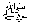

It has been reported by Abu Hurairah (Radhiyallaho anho) that Rasulullahsaid, "When my followers will begin to give importance to the worldly benefits, their hearts will lose the love of Islam; and when they stop calling to the truth, and stopping evil, they will lose the blessings of Wahi; and when they will swear each other, they will lose respect in the eyes of Allah." (Tirmazi)
Rasulullah 
"None of you can be a true Muslim, unless his wishes are according to the religion that I have brought."
Rasulullahsaid: Allah says: “O son of man, give yourself to My worship, and I will free your heart from the worldly worries and will remove your poverty, otherwise I will fill your heart with a thousand worries and will not remove your poverty." If we carefully study Islam, we will have to say that it has shown a proper place for our worldly jobs and our Islamic duties. We have been commanded to use half of our time for our Ibaadaat, and we may spend the rest of our time in all other things such as resting or going to work etc. According to this plan, we can carry out our Islamic duties as well as our worldly needs. So, if we busy ourselves mainly with the worldly needs, then we are unjust and unfair. Justice requires that we should do both, that is, see to our needs of this life as well as to the hereafter, so that both are taken care of.
“O Allah, save us from the tests of sins, whether they are visible or hidden." Aameen.